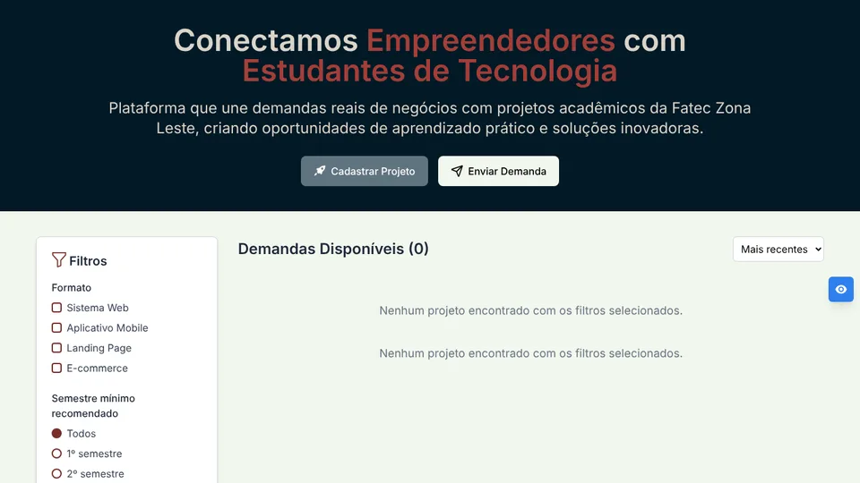

Projeto Integrador · Fatec ZL · equipe de 5
Osíris
Plataforma que conecta pequenos negócios aos alunos de DSM: o empreendedor cadastra uma demanda de software e um grupo de alunos a desenvolve como projeto real.
O que eu fiz no back-end
- Autenticação com JWT (Passport), senhas com bcrypt e guards de rota por perfil
- Módulo administrativo com CRUD completo: só um admin pode promover outro usuário
- Verificação de e-mail por código via SMTP (Nodemailer) com integração Azure
- Módulos de Empreendedor (com validação de CNPJ), Coordenador, Grupo, Demanda e Histórico
- DTOs validados, migrations com TypeORM, API documentada no Swagger e testes unitários com Jest
- Diagramas UML em PlantUML para a documentação